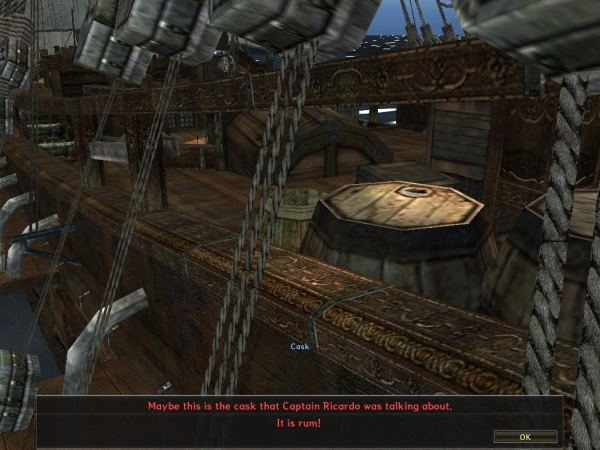

| Start NPC | None |
|---|---|
| Zone | Startonia |
| Objective | Conversation with NPC Nunez |
| Basic rewards | 5pcs Microphones |
| Item rewards | Soldier Character Card |
Quest walkthrough
After completion of creating characters and family, start Granado Espada at Startonia
You receive a mail at the beginning of the game. You can check the Quest “Before Starting” in the mail box by clicking (Alt + A)
Let’s go and find NPC Nunez. You can meet NPC Nunez by following the arrow. Also, as you find NPC Nunez, you can meet Recruitment NPC at Startonia square. When you click NPCs, you can see their comment and skills.
You can meet NPC Nunez by following the arrow. Talk to NPC Nunez by clicking him to continue with your quest.
Press or click the “OK” button to progress or continue with the NPC dialogue.
You can see New Pioneer Medal (Ctrl + L) which is obtained from NPC Nunez. Try to wear it by double click the mouse left button.
.jpg)
Put also to your other two characters the New Pioneer Medal by selecting the other two
characters. Shortcut key (F2) for the 2nd character and F3 for the 3rd character.
Then double click the New Pioneer Medal to equip it just like what you did at the 1st character.
Talk again to NPC Nunez after finish equipping the New Pioneer Medals.
Quest is completed by selecting “Move to Reboldoeux”. You will then be teleported to the first map,
the Cite de Reboldoeux map. The next quest is to go to NPC Lyndon in front of the Office of
Pioneering Support of Reboldoeux.
Before moving to Cite de Reboldoeux map, you will get rewards from NPC Nunez.
Rewards: Soldier Character Card, 5 Microphones and 3pcs New Pioneer Medals - 30 Days
| Start NPC | Nunez |
|---|---|
| Zone | Coimbra Market, The Cathari Falls |
| Objective | Chocolate 0/1, Silken Tofu 0/1, White Wolf Meat 0/5 |
| Basic rewards | 10 pcs Shiny Crystals |
| Item rewards | Field Drop Manual - Normal (30 Days) |
Quest walkthrough

After getting an Introduction Letter of Lyndon in Reboldoeux, meet Admiral Nunez in Coimbra.
You can move to Coimbra using waypoint.

Admiral Nunez asks you to buy some ingredients for his dish to serve you. You can purchase Chocolate and Silken Tofu from Lisa and Camille in Coimbra Market.


White Wolf Meat can be obtained by hunting White Wolf at The Cathari Falls.
Coimbra > The Nimrod Bridge > Garden of the King > The Cathari Falls


Bring all the purchased or obtained ingredients back to Admiral Nunez. Admiral Nunez will cook the dish using the ingredients you brought then ask you to deliver it to a Pioneering Officer of Coimbra.
.jpg)

The Pioneering Officer of Coimbra tells a story of Admiral Nunez`s dish.
"This Tofu Dish was spread from Katai to Illier, and is made with special ingredients that cannot be found in the New Continent. So Admiral tried to find substitutes and tested them out. He always ends up making the worst dishes… However the real problem is that he always gives them to me. I wish he will stop this soon, but he seems really determined. Some pioneers who do not know about the Admiral unwittingly become his dish testers. Oh, you have such bad luck today.."
The Pioneering Officer will tell you to throw away the dish. When you go back to Admiral Nunez, quest will be completed.
Rewards: 10 pcs Shiny Crystals, Field Drop Manual - Normal (30 Days)
| Start NPC | Auch Pioneering Officer |
|---|---|
| Zone | City of Auch |
| Objective | Go to Simon Ayende |
| Basic rewards | 20 Shiny Crystals |
| Item rewards | 50 Novice`s Soul Crystals |
Quest walkthrough
Now, you should finish pioneering in Coimbra and move to Auch. Move to Auch using the Waypoint in town and meet Auch Pioneering Officer. Auch Pioneering Officer is located at the Office of Pioneering Support of Auch. Welfare Letter of Coimbra Pioneering Officer is required to proceed with these quests.
Talk to the Coimbra Pioneering Officer, Jonathan, to receive a Welfare Letter.
Go to City of Auch and hand the letter to the Auch Pioneering Officer, Eleonore.
Auch Pioneering Officer thanks you for bringing the Welfare Letter, and explains the complicated situation of Auch.
She mentioned that she alone manages pioneers, Mission guides and Faction operations. It’s too much for her to handle all of it alone. Hence, she wants you to meet the Republican Party Leader, Simon Ayende who stays in the Villa de Libertad in the City of Auch. Simon Ayende is inside of the Villa de Libertad in the City of Auch
After talking to Eleonore, you will be given this quest. Go to Villa de Libertad.
Villa de Libertad located in the City of Auch, J7
Once inside, talk to Simon Ayende. Simon Ayende explains about the Republican Party. Then he asks you to go back to Auch Pioneering Officer and tell her that he’s very thankful for the advice that she gave him.
Go back outside and go to Eleonore. She will give you another task.
.jpg)
Rewards: 20 pcs Shiny Crystals, 50 pcs Novice Soul Crystals
| Start NPC | Ticket Agent, The Port of Coimbra |
|---|---|
| Zone | The Deck of the Pinta |
| Objective | Toribio, The Deck of the Pinta |
| Basic rewards | EXP Cards |
| Item rewards | 5 pcs Mithridart, Shiny Crystals |
Quest walkthrough
Note: Only Family member Level 75 and above can only go to Ustiur Base Camp through Pinta, if one of your family member that were logged in does not have the level requirement, you will not be able to travel to Ustiur. We advise to use family members above level 75.
Let's go to the Ustiur Base Camp.
You need to take a ship by talking to the ticket officer in the center port of Coimbra. Ticket officer sells a free pass for 'Pinta'
If you bought the ticket, go on shipboard by talking to ticket officer again. (You don't need to buy a free pass several times)
Before you go to Ustiur, a sub-quest from Toribio will be added.
Go to Toribio to start the quest
.jpg)
Go to the woman on deck
After talking the woman on deck, go back to Toribio to receive 5 Mithridarts as a reward. He will also say that Captain Ricardo is looking for you
.jpg)
Talk to Captain Ricardo
Captain Ricardo will ask you to find rum and says that it is a sailor’s best friend.
You will find the rum inside a barrel.
Return to Captain Ricardo and complete this quest.
Rewards: 5 pcs Mithridart, Shiny Crystals and EXP Cards